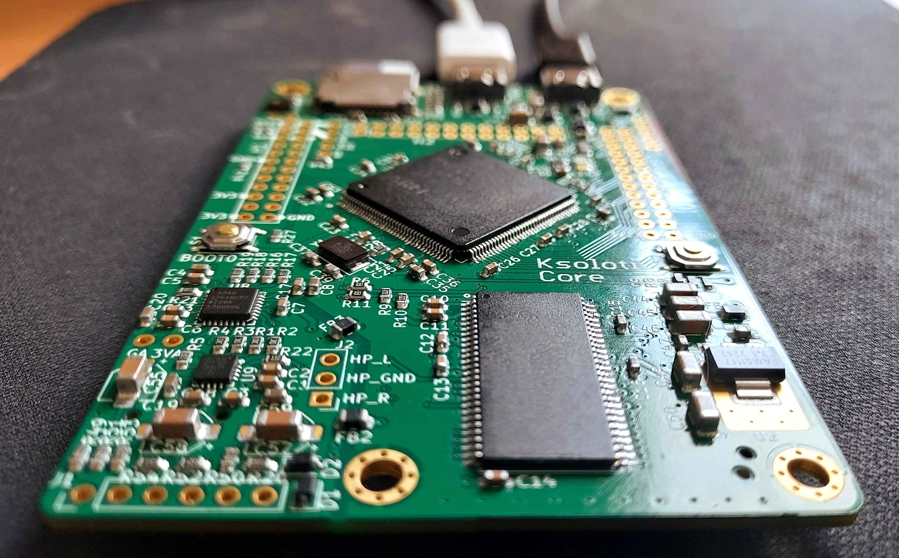

1. About

Ksoloti is an environment for generating and processing digital audio. It can be a programmable virtual modular synthesizer, polysynth, drone box, sequencer, chord generator, multi effect, sample player, looper, granular sampler, MIDI generator/processor, CV or trigger generator, anything in between, and more.
The Ksoloti Core is a rework of the discontinued(?) Axoloti Core board. In short, Ksoloti aims for maximum compatibility with the original Axoloti, but with some layout changes and added features.
Using the Patcher software on your computer, you create your own sound patches or explore patches other users shared. You can edit any existing patches and even objects, or write entirely new ones from scratch. When you are satisfied with your patch, you can upload it to the Ksoloti Core’s internal memory – or save a collection of patches on SD card – so you can play it without your computer connected.
The fun really starts when you connect pots, buttons, LEDs or displays, sensors and more to control your patches and make Ksoloti a tactile and highly playable hardware instrument.